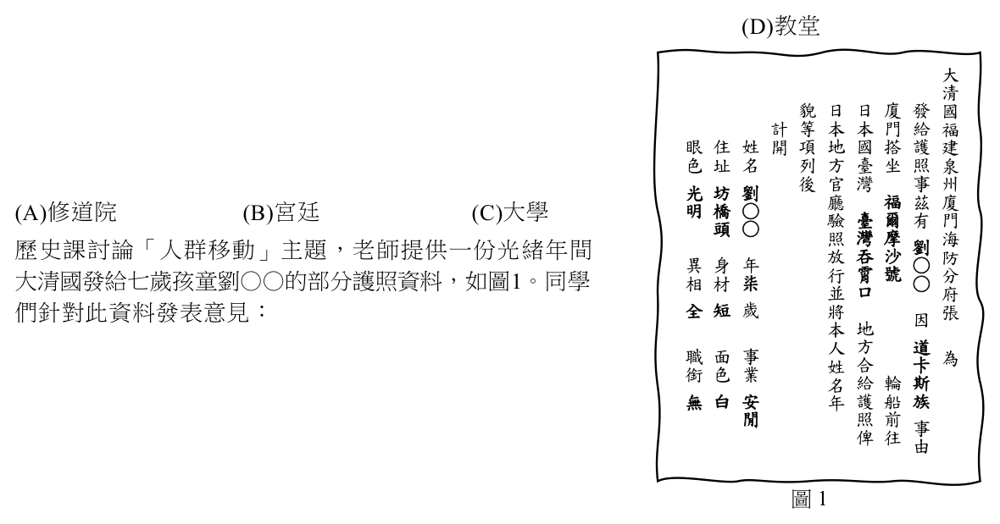
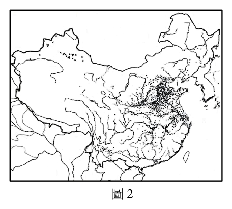

開卷有益 ／
分科測驗 ／ 歷史 ／ 113 年113 年分科測驗歷史試題與答案
這一頁是民國 113 年分科測驗歷史的整份歷屆試題，共 46 題，題目與標準答案出自大考中心 分科測驗歷年試題（依著作權法 §9，考試試題不受著作權保護），其中 46 題附有詳解。以下逐題列出題幹、選項與答案；要計時作答或記錄成績，請用線上練習。
大學入學考試中心原始場次代碼：分科歷史
線上作答這一科 →
全部 46 題
第 1 題
1935年福建省政府出版考察報告指出:查「某地」足為福建省振興產業之參考,考察項目:
鐵道建設、教育、林業、水利灌溉、稻米、甘蔗、茶葉、鴉片取締與專賣等。報告中
「某地」應是:
（A） 朝鮮（B） 沖繩（C） 印尼（D） 臺灣答案：（D）
詳解與考點 正解：史料把鐵道、教育、林業、水利灌溉與稻米、甘蔗、茶葉、鴉片取締及專賣並列為福建可參考的產業治理項目。這組線索指向日本統治下的臺灣：交通建設、農業改良與專賣制度在同一殖民經營脈絡中並行，且臺灣與福建相鄰，最符合考察對象，故選 D。
A：朝鮮當時同受日本統治，但題幹特別並列甘蔗、茶葉及鴉片專賣，較不符合朝鮮的產業條件，不能只憑同為殖民地判定。
B：沖繩雖也可聯想到甘蔗，卻不能同時對上題幹所列完整的交通、農業、專賣制度與福建借鑑近鄰的組合線索。
C：印尼也有殖民經濟作物，但題幹沒有荷蘭殖民政權或東南亞熱帶群島等指向印尼的材料；以個別作物相同不足以推定考察地。
本題考點：殖民地現代化（colonial modernization）——判斷時要把交通、教育、農業與管制制度視為一組治理措施；專賣制度（state monopoly）——政府直接管制特定商品的生產或販售，可作為統治型態線索；史料比對（source contextualization）——多項細節同時吻合才可定位史料所指的地區。
第 2 題
研究中國史的學者指出:交通事務關涉廣泛,在隋唐以後政府的分職上,常視為兵部的
業務,由兵部掌管。直到近代,交通才獨立為一個專業部門;而史學研究上,則把交通史
歸入經濟史的一環。由此觀之,隋唐以後的政府比較看重交通的哪種功能?
（A） 國防治安與政治控制（B） 物資運輸與經濟調節（C） 統一文化與齊整風俗（D） 國際互動與人民往來答案：（A）
詳解與考點 正解：材料明說隋唐以後交通常列為兵部業務。兵部掌管軍事，表示政府首先把道路與運輸視為調兵、防衛、治安及連結中央與地方的工具，而不只是一般經濟活動，故選 A。
B：交通確能運送物資並影響經濟，但材料的判準是主管機關歸屬兵部，所突出的優先功能是軍政控制。
C：統一文化與風俗可能受到交通影響，卻無法說明何以由兵部而非禮教或教育相關部門掌管。
D：國際往來不是兵部掌管交通的直接理由；題幹比較的是政府分職所反映的國內治理重點。
本題考點：行政分職（functional specialization of government）——從事務歸屬哪個官署，可推論國家優先看重的功能；交通與國家能力（transport and state capacity）——交通若與軍事、治安和命令傳遞相連，常是中央控制地方的重要基礎。
第 3 題
西元九世紀初,法蘭克國王查理曼創建了一個涵蓋西歐的帝國。查理曼推展基督教和文化,
他的宮廷學者群集,學術昌盛,帶來了一次文藝復興。學者指出:查理曼推動文藝復興,
留下許多珍貴的古代文獻抄本。當時,傳抄與保存這些古抄本,主要是倚靠哪個機構?
（A） 修道院（B） 宮廷（C） 大學（D） 教堂答案：（A）
詳解與考點 正解：查理曼時期要長期傳抄與保存古代文獻，需要有識字者、書寫訓練、藏書與穩定延續的機構。修道院設有抄寫室並保存手稿，是當時傳抄古抄本的主要網絡，故選 A。
B：宮廷能召集學者並提供贊助，但人員與資源較集中於統治者周邊，不能取代遍布各地的修道院抄寫與收藏功能。
C：大學是較晚出現並制度化的中世紀教育機構，無法作為九世紀初保存古抄本的主要依靠。
D：教堂可以是宗教活動與教育場所，但題目問的是專門持續傳抄、典藏手稿的主要機構，修道院更符合。
本題考點：加洛林文藝復興（Carolingian Renaissance）——判斷其文化成果時，要連結王室贊助與修道院教育、抄寫的共同作用；修道院抄寫室（monastic scriptorium）——中世紀手稿保存的關鍵在有固定社群、藏書與抄寫制度。
第 4 題
歷史課討論「人群移動」主題,老師提供一份光緒年間
大清國發給七歲孩童劉○○的部分護照資料,如圖1。同學 大 清
們針對此資料發表意見: 貌 日 日 廈 發 國
計 等 本 本 門 給 福
甲生:清朝統治臺灣後曾頒布「渡臺禁令」,必須持有 眼 住 姓 開 項 地 國 搭 護 建
色 址 名 列 方 臺 坐 照 泉 圖中護照才能來臺灣 後 官 灣 事 州 光 坊 劉
乙生:護照提到「道卡斯族」,這是漢人跨越土牛線到 明 橋 ○ 廳 福 茲 廈 驗 臺 爾 有 門 頭 ○ 原住民區域的通行證 照 灣 摩 海 劉 放 吞 沙 防
丙生:護照寫有「日本國臺灣」,這是馬關條約後清政府 異 身 年 行 霄 號 ○ 分 相 材 柒 ○
並 口 府 發給往臺灣的證照 全 短 歲 將 張 因
丁生:護照中明確註明旅客個人資料,應該是為方便臺灣 本 地
人 方 道
政府官員的查驗 職 面 事 姓 合 卡 為 銜 色 業 名 給 輪 斯
哪些同學的說法正確? 無 白 安 年 護 船 族

（A） 甲乙（B） 丙丁 閒 照 前 事 俾 往（C） 乙丙（D） 甲丁 由
圖1答案：（B）
詳解與考點 正解：判準在（丙）所指出的「日本國臺灣」與（丁）對個人資料用途的判讀。臺灣在馬關條約後成為日本領土，清政府對前往日本統治下臺灣的人發給旅行證照，因此（丙）正確；證照記載年齡、相貌等個人資料，也便於臺灣政府官員辨識與查驗，因此（丁）正確。故選 B。
A：此說同時包含（甲）與（乙）。渡臺禁令是清代早期限制漢人渡海來臺的政策，與日本統治下臺灣的跨境旅行情境不同；道卡斯族也不是漢人跨越土牛線時所需的通行證判準。
C：此說含有正確的（丙），但（乙）把證照用途誤判為跨越土牛線的通行證，故不能選。
D：此說含有正確的（丁），但（甲）把時代與制度錯連到渡臺禁令，故不能選。
本題考點：馬關條約（Treaty of Shimonoseki）——看到「日本國臺灣」時，要連結1895年後臺灣主權轉移；旅行證照（travel document）——個人身分特徵可用於跨境移動時的查驗；渡臺禁令（Taiwan crossing restriction）——須與清代早期渡海管制區分，不能套到日治初期的旅行證照。
第 5 題
學者在福建泉州發現一塊以印度南部泰米爾文刻的石碑,內容:「向莊嚴的濕婆神致敬。
願此地繁榮昌盛。時在釋迦曆1203年哲帝萊月(西元1281年4月),港主為感謝察合臺大汗
御賜商業執照,特建寺廟,敬奉神靈入坐,並願吉祥的大汗幸福昌盛。」這一碑文可用於
研究何種主題?
（A） 唐帝國的東西文化交流（B） 伊斯蘭教致力傳播教義（C） 印度的君主向中國朝貢（D） 蒙古帝國在亞洲的擴張答案：（D）
詳解與考點 正解：石碑可判讀的線索是 1281 年、泉州、泰米爾文、濕婆寺，以及港主感謝察合臺大汗頒給商業執照。這些線索把印度商人的宗教活動與蒙古統治下的跨亞洲商業網絡連在一起，最適合研究蒙古帝國在亞洲的擴張及其促成的人員、信仰與貿易交流。故選 D。
A：碑文年代是 1281 年，不能用來研究早已結束的唐帝國東西文化交流。
B：碑文敬奉的是濕婆神，呈現的是印度教活動，不是伊斯蘭教傳播。
C：取得商業執照的是港主，內容也沒有印度君主向中國朝貢的關係。
本題考點：蒙古帝國與交流（Mongol Empire and exchange）——看到蒙古統治者、商業許可與多語文碑刻同時出現時，要從跨區域統治和商業網絡判讀；碑刻史料（epigraphic evidence）——碑文的年代、文字、奉祀對象與授權者可交叉指出人群流動與政治關係。
第 6 題
十八世紀以後,荷蘭東印度公司逐漸失去在東南亞的貿易主導權,英國則擴大在亞洲的貿易
規模。這種變化與下列何者有關?
（A） 中國積極扶植華商,壓縮荷蘭的貿易空間（B） 英國失去北美洲殖民地後,重心轉向亞洲（C） 荷蘭擴大美洲投資,降低對東南亞的倚賴（D） 日本實施鎖國,荷蘭喪失東亞的貿易據點答案：（B）
詳解與考點 正解：十八世紀英國擴大亞洲貿易的關鍵，在於失去北美洲殖民地後必須重整海外帝國與商業重心，因而更積極經營亞洲市場；這正能解釋英國崛起、荷蘭東印度公司相對失勢的變化。故選 B。
A：題幹沒有顯示中國以扶植華商作為壓縮荷蘭空間的主要原因，且這不能直接說明英國為何擴張亞洲貿易。
C：荷蘭是否擴大美洲投資，不能解釋英國在亞洲的貿易規模何以增加；兩者的因果方向不合題幹。
D：日本鎖國開始較早，荷蘭仍保有長崎出島的貿易據點，不能用作十八世紀荷蘭失去東南亞主導權的關鍵解釋。
本題考點：英國帝國轉向（British imperial reorientation）——解釋貿易重心改變時，要連結殖民地得失與後續的市場經營；東印度公司競爭（East India Company competition）——比較歐洲商業勢力時，需看各國在殖民地、航線與市場上的相對位置。
第 7 題
施琅曾上奏朝廷,呼籲:「(今)海氛既靖,內地溢設之官兵,盡可陸續汰減,以之分防臺灣、
澎湖兩處。臺灣設總兵一員......兵八千名;澎湖設水師副將一員,兵二千名。通共計兵一萬
名,足以固守,又無添兵增餉之費。」從上文語氣,施琅的呼籲,應是出現在哪一階段?
（A） 集結大軍,準備渡海攻臺（B） 攻占澎湖,鄭軍退守臺灣（C） 鄭氏甫降,臺灣棄留未定（D） 納入版圖,規劃治臺細節答案：（C）
詳解與考點 正解：關鍵在「海氛既靖」表示戰事已平定，而施琅隨即主張把內地多餘官兵分防臺灣、澎湖，並強調「無添兵增餉之費」。這種以最低成本論證駐防可行的語氣，是在鄭氏剛投降、朝廷尚討論臺灣應留應棄時爭取保留臺灣的主張，故選 C。
A：準備渡海攻臺時戰事尚未平定，不會以「海氛既靖」為前提安排戰後駐防。
B：鄭軍仍退守臺灣時，臺灣尚未完全平定；文中已轉為規劃分防，時間應更晚。
D：若已確定納入版圖，重點會是具體行政建置；文中反覆強調不增兵餉，顯示仍在回應棄留的政策爭論。
本題考點：史料語氣（rhetorical context）——奏疏中的成本、必要性與可行性論證，能判斷說話者在爭取哪一項尚未定案的政策；清初治臺（early Qing rule in Taiwan）——辨別攻臺、受降、棄留辯論與建置治理時，要對照軍事是否結束及決策是否已定。
第 8 題
某個時期,臺灣許多知識分子呼籲開放黨禁。他們批評說:執政黨違逆世界民主潮流,策動
言論抨擊有意籌組新政黨的人士。執政黨卻辯稱,現在正值動員戡亂「非常時期」,不宜
另組新黨,以免「分散力量」。但我們想問「非常時期」已過了十幾年,究竟何時才終了?
我們難道要一輩子「非常時期」下去?上述開放黨禁的主張,最可能出現在何時?
（A） 1945年,中日戰爭終結,政府結束訓政,預備實施憲政（B） 1950年,韓戰爆發,知識界欲籌組新政黨,對抗共產黨（C） 1960年,自由派人士希望成立新政黨,以落實政黨政治（D） 1986年,黨外人士積極籌組政黨,突破戒嚴時期的黨禁答案：（C）
詳解與考點 正解：文中一面批評動員戡亂的「非常時期」已延續十幾年，一面談到自由派籌組新政黨以落實政黨政治，兩個線索共同指向 1960 年自由派人士的組黨訴求。此時的爭點正是長期非常體制與多黨政治能否並存，故選 C。
A：1945 年尚未形成文中所說已延續十幾年的動員戡亂非常體制，也不是自由派爭取新政黨的該段脈絡。
B：1950 年距非常時期開始不久，與「已過十幾年」不合；題幹訴求的是落實政黨政治，不是籌組政黨對抗共產黨。
D：1986 年確有黨外人士積極籌組政黨，但題幹的「十幾年」時間感與自由派組黨訴求更符合 1960 年的情境。
本題考點：臺灣戒嚴時期（martial-law era in Taiwan）——定位政治史材料時，要把非常體制持續時間與具體政治訴求一起比對；政黨政治（party politics）——要求組織新政黨是在爭取競爭性政治參與，不能只按反共語彙判讀。
第 9 題
1860年代,英國人必麒麟從福建到臺灣,在打狗海關、安平海關和英國商行任職七年。因
經歷豐富,又通曉華人方言,他在1877年應聘到「某地」出任首任「華民護民官」,負責
處理華人幫會的糾紛、查禁華人走私「苦力」貿易。文中「某地」最可能是今日何地?必麒麟
受僱於誰?
（A） 新加坡;英國殖民政府（B） 廣州;兩廣總督（C） 香港;英國商行（D） 廈門;英國租界領事館答案：（A）
詳解與考點 正解：材料同時給出 1877 年、首任「華民護民官」、處理華人幫會糾紛與查禁苦力貿易等線索。這是英屬新加坡殖民政府為管理華人社群設置的官職；必麒麟具有閩臺經驗與華人方言能力，因此受英國殖民政府聘用。故選 A。
B：廣州屬清朝管轄，兩廣總督不會以英國殖民地的「華民護民官」制度聘用必麒麟。
C：香港雖是英國殖民地，但材料所述的首任職務與處理華人幫會、苦力貿易的情境對應新加坡，且雇主是殖民政府，不是商行。
D：廈門不是英國殖民政府管轄的殖民地，英國租界領事館也不符合材料中的首任官職與行政職掌。
本題考點：英國殖民治理（British colonial administration）——辨識殖民官職時，要同時看任命者、管轄地與職掌，不可只憑英國商人的身分判斷；華人移民社群（Chinese diaspora）——幫會、勞工貿易與語言能力常是殖民政府處理移民社群的重要治理線索。
第 10 題
古人面對無法預期的災禍,往往祈求神祇以平息
災難。圖2是明清時期因某種災難而興建的廟宇
分布圖,黑點標示這種廟宇所在地。這種廟宇供奉
的神祇最可能是:

（A） 禳除蝗災的蝗神（B） 協助避疫的王爺（C） 布施醫藥的保生大帝（D） 護佑海上生活的媽祖
圖2答案：（A）
詳解與考點 正解：題目問的是因特定災禍而興建、並祈求神祇平息災害的廟宇；四個選項中，蝗神直接對應農業社會最具破壞性的蝗災。明清農耕地區面對蝗蟲侵害作物時，會以祈禳蝗災的信仰回應，故選 A。
B：王爺信仰主要與瘟疫的禳解及保境安民相連；若災害是疫病，才會以王爺作為較直接的判斷。
C：保生大帝以醫藥、治病與保佑健康聞名，和蝗蟲造成的農作損失不是同一類災害。
D：媽祖信仰著重航海、漁撈與海上安全，較能對應沿海居民的海難風險，不能解釋以農業蟲害為核心的祭祀。
本題考點：民間信仰與災害（folk religion and disasters）——先將神祇職能對應災害種類，再判讀祭祀設施的分布意義；蝗災（locust plague）——在傳統農業社會，蟲害直接威脅收成，相關祈禳信仰多以農耕災害為判準。
第 11 題
1550年,哈布斯堡皇室邀請耶穌會到奧地利成立分會,協助改革維也納大學。耶穌會領袖
羅耀拉致函皇帝:「要對付當前肆虐於德意志的惡,最好的辦法是求助於大學,它們以
模範的宗教生活與純正的公教教義引人向善。......陛下將在維也納成立耶穌會,天主保佑
這辦法能奏效。」文中「肆虐於德意志的惡」,指的最可能是:
（A） 黑死病大爆發,帶來社會危機（B） 宗教改革蔓延,造成社會分裂（C） 獵巫活動猖獗,導致社會不安（D） 政教衝突頻仍,破壞社會和諧答案：（B）
詳解與考點 正解：關鍵是 1550 年耶穌會以「純正的公教教義」與大學教育來對付德意志的「惡」。耶穌會是天主教改革的重要力量，這種以教義與教育回應德意志宗教分裂的語境，指向宗教改革的蔓延，故選 B。
A：黑死病的大流行主要發生在 14 世紀，且防治疫病不會以重建大學的天主教教義作為主要對策。
C：獵巫活動雖可能造成社會不安，但引文聚焦於公教教義與耶穌會設立，判別重點是宗派競爭而非獵巫。
D：政教衝突是寬泛描述，未能說明文中為何特別提到德意志、耶穌會與純正公教教義；這些線索更具體指向宗教改革。
本題考點：宗教改革（Protestant Reformation）——16 世紀德意志出現教派分裂時，先連結新教改革運動；天主教改革（Catholic Reformation）——耶穌會透過教育與教義整頓回應宗教改革；史料情境判讀（historical contextualization）——將年代、行動者與用語合併判斷，不能只看抽象的「社會不安」。
第 12 題
一位學者指出:關於族群歷史源流問題,以往經常使用口傳、神話來彌補文獻資料所不及;
然而這類資料只能視為是文化上的一種表現,不一定是客觀發生過的史實,考古發掘的
出土資料才是掌握關鍵的鑰匙。這位學者的論述支持:
（A） 口傳、神話足以重建族群的源流（B） 文獻是研究族群源流的唯一史料（C） 神話最能解釋族群源流的差異性（D） 物質證據能更具體反映族群源流答案：（D）
詳解與考點 正解：學者明確區分文化表現與客觀史實：口傳、神話可以補足文獻不足，卻不必然是實際發生的事件；考古發掘的出土資料才被視為掌握源流的關鍵。因此其論述支持物質證據能更具體反映族群源流，故選 D。
A：引文正是提醒口傳與神話未必等同客觀史實，不能單靠它們重建族群源流。
B：學者指出文獻資料有所不及，並主張考古出土資料是關鍵，與「唯一史料」的說法相反。
C：神話可作為文化表現，但引文沒有說它最能解釋族群源流的差異，反而保留其史實可靠性的限制。
本題考點：史料批判（source criticism）——使用資料前須區分文化意義與可驗證的史實；考古證據（archaeological evidence）——出土遺物能提供可檢驗的物質線索；口述傳統（oral tradition）——可呈現群體記憶與文化觀念，但不能自動視為歷史事實。
第 13 題
第一次世界大戰前,德國軍方因應俄國與法國的結盟,設計一個兩面作戰計畫:由於法國
動員比俄國迅速,德國必須在六星期內,調動大部分軍力快速擊敗法國,僅留少數部隊
防備俄國。待擊敗法國後,即可火速將德軍東調,全力對付數量龐大但動員緩慢的俄軍。
這項作戰構想,是基於德國有快速的運兵能力,因其擁有:
（A） 現代化高速公路（B） 便捷的鐵路運輸（C） 快速的航空機隊（D） 龐大的海運船團答案：（B）
詳解與考點 正解：題幹的「六星期內」與「西線轉東線」都在要求大量部隊依固定時刻快速跨越陸地。德國的鐵路網可把動員、補給與部隊調度編進時刻表，先集中兵力進攻法國，再把兵力轉往東線，正能支撐這種兩面作戰構想，故選 B。
A：現代化高速公路尚不足以承擔第一次世界大戰前大規模部隊與補給的快速集結；題幹所述的運兵體系是鐵路，不是公路。
C：當時航空機隊的載運量與續航能力都無法調動大部分陸軍，不能解釋六星期內集中兵力的設計。
D：海運船團適合跨海運輸，卻不能讓德軍在歐陸西線與東線之間依時程迅速調防。
本題考點：鐵路動員（railway mobilization）——看到大規模動員、固定期限與跨戰線調兵時，先判斷是否依賴鐵路網；兩面作戰計畫（two-front war planning）——比較各戰線的動員速度與轉兵時間，才能理解先後進攻的安排。
第 14 題
某一時期,有本雜誌寫到:旗袍已經滿街可見,這旗袍的流行真比學術教育的普及還傳得
快......現在為第一步的「革命」,先把旗袍的兩袖不要了,這是我國女國民一年來的第一
大事業。這段文字最可能反映哪個時代的氛圍?
（A） 1920年代,新文化運動（B） 1940年代,新生活運動（C） 1960年代,文化大革命（D） 1980年代,性別平權運動答案：（A）
詳解與考點 正解：從「女國民」與把改造旗袍視為「革命」的語氣，可看出作者把女性服飾變化連到社會現代化與新式國民的塑造。旗袍普及、剪去衣袖所呈現的是對舊式性別規範與生活樣態的挑戰，最符合 1920 年代新文化運動的氛圍，故選 A。
B：新生活運動著重紀律、禮節與社會秩序；即使也涉及日常生活規範，材料以服飾革新表達解放與新國民的筆調並非其核心。
C：文化大革命將旗袍視為帶有舊社會或資產階級色彩的服飾，與材料把旗袍流行及其改造當作時尚革命不同。
D：1980 年代的性別平權運動主要以權利、職場與制度平等為論述重心；材料中的「女國民」語彙更接近民國初年建構新文化的脈絡。
本題考點：新文化運動（New Culture Movement）——材料若把個人生活、服飾或婚姻的改變連到「新國民」，可從文化革新的脈絡判讀；服飾現代化（fashion modernization）——服飾不只反映審美，也可作為性別角色與社會價值改變的線索。
第 15 題
一位山西讀書人在1914年寫的日記:予之幼時,即有萬里封侯之志,既冠而讀兵書......年
垂四十,身雖登科,終無機會風雲,不得已而舌耕度日。光緒季年,國家變法維新,吾道
將就漸滅;迄宣統三年,革命黨起,紛擾中華,國遂淪亡,予即無舌耕之地,困厄於鄉已
數年矣。從日記內容判斷,這位讀書人的政治立場最可能是:
（A） 認同清朝統治（B） 肯定維新變法（C） 支持廢除科舉（D） 歡迎共和制度答案：（A）
詳解與考點 正解：日記作者把清末變法稱為「吾道將就漸滅」，又把宣統三年的革命寫成「紛擾中華，國遂淪亡」。他對清朝覆亡感到失去功名與教書立足點，而非把革命當成新局面的開始，顯示其立場最接近認同清朝統治，故選 A。
B：作者提到變法維新時，緊接著感嘆自己所奉行的道路將消滅；這是憂懼舊秩序被改變，不是肯定維新。
C：「身雖登科」與失去「舌耕之地」都顯示他重視舊有讀書人取得身分與生計的途徑，不能據此推成支持廢除科舉。
D：他用「革命黨起」與「國遂淪亡」描述辛亥革命，語氣明確是排斥與哀傷，並非歡迎共和制度。
本題考點：史料立場判讀（source-position analysis）——判斷作者立場時，要看其對事件使用的褒貶詞與自我利益如何連結；清末革命（late-Qing Revolution）——同一政治變動會讓不同社會群體有不同得失，不能只由事件名稱推定態度。
第 16 題
《總統蔣公(蔣中正)大事長編初稿》記載兩則資料:
資料甲、「正午會談,對毛澤東應召來渝(重慶)後之方針,決以誠摯待之。政治與軍事應整
個解決,但政治之要求,予以極度之寬容,而對軍事則嚴格之統一,不稍遷就。」
資料乙、「此時對共黨應以主動與之妥洽,准予整編共軍為十二個師,如其真能接受政令、
軍令,則政治上當準備委派共黨二人,並予以一省之主席,以觀後效。」
這兩則資料應是何時的記錄?
（A） 1924年聯俄容共時期（B） 1927年國民黨清黨時（C） 1936年西安事變期間（D） 1945年抗戰勝利之後答案：（D）
詳解與考點 正解：毛澤東「應召來渝」直接指向重慶會談；資料又討論整編共軍、接受政府軍令，以及給予政治職位與一省主席，都是抗戰勝利後國共協商政治與軍事安排的內容，故選 D。
A：聯俄容共時期是在國民黨改組與第一次合作的階段，尚未出現抗戰勝利後由毛澤東赴重慶談判、整編既有共軍的情境。
B：1927 年清黨以排除共產黨勢力為主，與資料中主動協商、准予整編軍隊的方針相反。
C：西安事變的關鍵是蔣中正遭張學良、楊虎城扣留而轉向抗日合作，不是毛澤東赴重慶談判戰後軍政統一。
本題考點：戰後國共談判（postwar Kuomintang–Communist negotiations）——看到「來渝」「整編共軍」與政治職位交換，要連結抗戰勝利後的協商；軍隊國家化（nationalization of the military）——「接受政令、軍令」是在爭取軍事指揮權統一，不能只看政治讓步。
第 17 題
表1是1830-1970年，四個國家實質人均GDP增長表，以1960年美元價值為基準。依據近代世界經濟發展史判斷，表中甲、乙、丙、丁四個國家先後順序應是：
表1 國家＼年代 1830 1860 1913 1929 1950 1960 1970 甲國 240 345 775 900 995 1790 2705 乙國 180 175 310 425 405 855 2130 丙國 370 600 1070 1160 1400 1780 2225 丁國 240 550 1350 1775 2415 2800 3605
（A） 美國、英國、日本、西德（B） 日本、西德、美國、英國（C） 西德、日本、英國、美國（D） 英國、美國、西德、日本答案：（C）
詳解與考點 正解：判讀這張表要同時看早期工業化的起點與戰後成長的折點。丙在 1830、1860 年分別為 370、600，四國中起點最高，符合英國的早期工業化；丁在 1913 年後持續最高，對應美國。乙在 1830、1860 年僅為 180、175，1950 年後卻升至 2130，符合日本的戰後快速成長；甲由 1950 年的 995 升至 1970 年的 2705，對應西德的戰後復甦。故甲、乙、丙、丁依序為西德、日本、英國、美國，故選 C。
A：丁在 1913 年後持續最高，與把丁列為西德不符；甲在 1950 年後的回升反而符合西德，非美國。
B：乙的低起點與 1950 年後快速成長是日本的型態，不能列為西德；丙早期最高、丁後期領先，也不支持把丙列為美國、丁列為英國。
D：丁從 1913 年起領先，不能列為日本；乙起點低、戰後才急升，也不能列為美國。
本題考點：實質人均 GDP（real GDP per capita）——以固定價格與每人平均值比較不同年代的生活水準與成長，不能只比較總量；早期工業化（early industrialization）——早期數值領先、後期相對被超越的系列可用來辨認英國；戰後經濟復甦（postwar economic recovery）——比較 1950 年後的跳升幅度，可辨認日本與西德的復甦型態。
第 18 題
這個社會的地方官員,每年須查核轄地人口狀況。除貴族、公務員、年老和殘疾者外,凡
居住城內,身高滿七尺,六十歲以下男子,平時須服勞役,戰時則入伍;凡居住城外,
身高滿六尺,六十五歲以下男子,平時須服勞役,但戰時無權當兵,只能擔任後勤工作。
地方官員通常由貴族出任,城內公共事務需徵求城內男子的意見才能作決策。這個社會
最可能是下列何者?
（A） 春秋早期的城邦（B） 秦漢時期的郡縣（C） 北朝時期的塢堡（D） 中唐時期的藩鎮答案：（A）
詳解與考點 正解：城內男子可參與公共決策、戰時入伍，城外男子則負擔勞役與後勤；地方官員又由貴族出任。這種以城內「國人」為政治與軍事核心、城外居民地位較低的結構，符合春秋早期城邦的社會組織，故選 A。
B：秦漢郡縣以中央任命的官僚治理地方，徵發與兵役也不是依城內外男子是否具有公共議事資格來區分。
C：北朝塢堡是動亂中形成的地方防衛聚落，不能由材料中的城內議事權與貴族官員制度推定為塢堡。
D：中唐藩鎮的權力核心是節度使及其軍事集團，與材料所示全體城內男子參與公共事務的城邦結構不同。
本題考點：春秋城邦（Spring and Autumn city-state）——材料同時出現城內議事、貴族任官與城內服兵役時，可判斷政治共同體以城內居民為核心；國人與野人（urban and rural inhabitants）——比較兵役、勞役與議事權的差異，可辨認早期社會的身分階層。
第 19 題
1851年美國作家梅爾維爾出版《白鯨記》,描寫捕鯨船在海上與鯨魚艱難的搏鬥場面。
這本書反映十九世紀美國和若干歐洲國家捕鯨業的榮景,但二十世紀後這個行業逐漸衰微。
關於捕鯨業的興衰,以下哪個敘述為是?
（A） 歐美的捕鯨業是近代國家為控制海權而順帶產生的行業（B） 在現代畜牧業發展之前,鯨魚是歐美國家重要肉品來源（C） 獵捕鯨魚主要是為取鯨油,這是石油發展前的重要能源（D） 十九世紀捕鯨是為科學探究,後因環保觀念興起而蕭條答案：（C）
詳解與考點 正解：十九世紀捕鯨業的大量需求主要來自鯨油。鯨油可用於照明、潤滑等用途，在石油成為普遍能源之前具有重要經濟價值；石油等替代能源發展後，原有市場縮小，正能解釋行業由盛轉衰，故選 C。
A：捕鯨業雖需要航海技術，主要仍是為市場供應原料的商業活動，不能說是近代國家控制海權所順帶產生。
B：歐美捕鯨的主要經濟誘因不是把鯨肉作為重要肉品來源，而是取得鯨油等可供工業與生活使用的原料。
D：科學探究並非十九世紀大規模獵捕鯨魚的主要目的；產業衰退也不能只歸因於環保觀念，而要看到能源替代造成的需求變化。
本題考點：鯨油經濟（whale-oil economy）——判斷近代資源產業時，要先找當時市場最需要的產品；能源轉型（energy transition）——新能源取代舊能源時，既有採集與運輸產業會因需求下降而衰退。
第 20 題
某一時期,日本國家政策公然排除英美文化的影響,禁止英美音樂,要「消滅頹廢的爵士
樂」,還發動語言淨化運動,要改變日語中混雜西方語彙的現象。這最可能發生於何時?
（A） 1920年代,日本經濟不景氣,發生抑美論（B） 1940年代,太平洋戰爭期間,鼓吹反美論（C） 1960年代,日本學生運動中,提出仇美論（D） 1980年代,日美貿易摩擦時,出現疑美論答案：（B）
詳解與考點 正解：禁止英美音樂、消滅爵士樂與淨化西方語彙，都是把文化納入戰時動員並以英美為敵對對象的作法。這種全面排斥英美影響的國家政策，最符合 1940 年代太平洋戰爭期間的日本，故選 B。
A：1920 年代雖可能出現經濟與對外關係的批評，尚不符合以政府力量普遍禁絕英美音樂、推動語言淨化的戰時統制。
C：1960 年代學生運動可能批判美國政策，但不是國家以戰爭動員名義禁止英美文化並全面改造語彙。
D：1980 年代日美貿易摩擦屬經貿競爭，並未形成材料所示把英美文化當敵性文化來管制的情境。
本題考點：戰時文化統制（wartime cultural control）——文化禁令若同時針對敵國音樂與語言，要從戰時動員而非一般文化偏好判讀；太平洋戰爭（Pacific War）——辨識日本反英美政策時，要連結國家總力戰與敵我宣傳。
第 21 題
1930年代,德國作家布萊希特(1898-1956)以詩句表達對傳統史書的不滿:「誰建造了底比斯
的七門?/在書裡你會找到國王的名字。/國王難道搬得動大石頭?......每一頁都是
勝利,/誰為勝利者準備了酒宴?/每十年就出個偉人,/酒宴的帳單交由誰來交付?/
記載越多,/問題就越多。」從詩句內容推斷,下列何者最能切合布萊希特對史書關注主體
的期待?
（A） 敘述古希臘英雄遠征、冒險故事的《荷馬史詩》（B） 分析阻礙明末改革之結構因素的《萬曆十五年》（C） 討論塑造國王之偉大形象的《製作路易十四》（D） 書寫近代工人結社活動的《英國工會運動史》答案：（D）
詳解與考點 正解：詩句追問蓋城的石頭由誰搬、勝利的酒宴由誰準備與付帳，批評傳統史書只留下國王與偉人的名字，卻忽略勞動者。以近代工人的集體結社活動為主題的《英國工會運動史》，最能回應這種把歷史關注轉向一般群眾的期待，故選 D。
A：《荷馬史詩》以英雄遠征與冒險為敘事重心，仍是以傑出人物為中心，與詩句的批判相反。
B：《萬曆十五年》雖分析政治結構與改革困境，但主要不是以勞動群眾的集體行動為研究主體，因此不是最切合的選項。
C：《製作路易十四》討論國王偉大形象如何被塑造，正落在詩句所質疑的君主中心敘事。
本題考點：由下而上的歷史（history from below）——材料若追問建造、勞動與付出者，要找以一般人或群體行動為主體的史學；社會史（social history）——比較史書主題時，區分它聚焦政治菁英、制度結構或社會群眾。
第 22 題
二次世界大戰期間,德國政府實施食物配給,從奶油、肉類到麵包與馬鈴薯,陸續管制。
甚至規定:「優良」公民可有較多配額;「次等」人民每天只能在下午四點以後的一小時內,
前往指定商店購買有限的商品,商品價格不但高出一成,且很多商品都已售完。當時德國
政府區分「優良」公民與「次等」人民,依據的標準為何?
（A） 族裔（B） 性別（C） 教育程度（D） 經濟地位答案：（A）
詳解與考點 正解：材料把公民分成「優良」與「次等」，並依此給予不同配給、購買時間與價格待遇。第二次世界大戰期間納粹德國以族裔分類建構政治與社會權利的高低，這種配給差別正是其種族政策的延伸，故選 A。
B：性別會影響戰時角色分工，但材料中的「優良」與「次等」是整體人民身分的分級，並非男女之間的待遇比較。
C：教育程度沒有構成納粹政權劃分人民基本權利與配給資格的核心標準。
D：經濟地位可能影響實際購買能力，卻不能解釋官方先以身分把人分為兩類，再規定不同配給時段與價格。
本題考點：種族國家（racial state）——國家若以出身或族裔決定權利與資源分配，應從種族階層而非個人能力判讀；戰時配給（wartime rationing）——配給制度不只處理物資短缺，也可能顯示政權如何排序人民身分。
第 23 題
一位史家考察某地區的音樂文化,指出:「儘管這個地區和西方世界已經往來好幾個世紀,
但歐洲文化的影響在音樂方面幾乎未留下任何痕跡。」又說:「直到今天,除了一些業已
西化的孤立地區之外,這個地區仍是國際知名大演奏家世界巡迴表演行程中的留白
處。......對這個地區大部分地方而言,西方音樂依然是極為異樣的外國產物。」這位史家
討論的地區最可能是:
（A） 拉丁美洲（B） 中東（C） 東亞（D） 東歐答案：（B）
詳解與考點 正解：材料強調該地區與西方往來已久，西方音樂卻仍只在少數西化地區留下痕跡，且國際演奏家巡演常不涵蓋其大部分地區。相較於其他選項，中東長期與歐洲接觸但在音樂文化上保有強烈自身傳統的特徵最相符，故選 B。
A：拉丁美洲經歷長期殖民與移民交流，歐洲音樂傳統已與當地文化深度交織，難以概括為幾乎未留痕跡。
C：東亞多地已形成西洋音樂教育、演出與都市聽眾，無法用「大部分地方仍極為異樣」作為最貼切的概括。
D：東歐本身位於歐洲音樂文化圈之內，西方音樂不會被描述為全面陌生的外國產物。
本題考點：文化擴散（cultural diffusion）——長期往來不必然造成文化全面吸收，要看特定藝術形式是否進入教育、演出與日常生活；材料推論（evidence-based inference）——區域題應同時比對接觸歷史、文化保留與傳播範圍，而非只憑單一印象。
第 24 題
明清時期,民間買賣土地的契約必須詳載賣、買雙方、仲介的「中人」,及撰寫契約的
「代筆」的姓名,交易的標的、價格,註明土地範圍,並向官府呈報登記,由買方繳納
報官時的稅金。學者從以上資訊,主張明清時期有一項基礎,促成土地買賣可靠,而能
蓬勃發展。該基礎最可能是:
（A） 市場價格資訊公開透明（B） 政府積極管理交易活動（C） 民間風氣強調交易誠信（D） 仲介協助交易收費低廉答案：（B）
詳解與考點 正解：土地契約要列出買賣雙方、中人、代筆、標的與範圍，還須向官府登記並納稅。這些程序讓交易有可追查的書面紀錄與官方承認，降低事後爭議，因此學者所說的可靠基礎是政府積極管理交易活動，故選 B。
A：契約會記載價格，卻不等於市場上所有價格資訊都公開透明；材料的重點是登記與可追查性。
C：交易人可能重視誠信，但材料提供的是契約格式、見證人與官府登記等制度性保障，不能把可靠性只歸於民間風氣。
D：中人與代筆的姓名被記入契約，是為了辨識與追責；材料沒有提供其收費高低的資訊。
本題考點：契約與登記（contract and registration）——交易是否可靠，要看權利、標的與參與者能否被記錄及追查；交易成本（transaction costs）——官方登記與見證制度可減少資訊不清與違約爭議，促進市場交易。
臺灣總督府委託伊能嘉矩進行臺灣踏查。伊能嘉矩於1897 年11 月的「踏查日記」, 記載他到大庄(今花蓮富里鄉東里村)聽一位名叫Taoren 的老人說:我們平埔人最初住在 前山舊鳳山縣,受到客人(移入的漢人)壓迫,不得已推舉族中Poanvura 等三人為首, 帶領族人避到後山的巴塱衛(今臺東大武鄉),然後北上到卑南。在卑南,受到卑南「蕃」 欺負,忍受七年後,舉族北遷到璞石閣(今花蓮玉里鎮)南側的大庄定居。
第 25 題
總督府委託伊能嘉矩進行全臺灣踏查,最主要目的應是:
（A） 純為對臺灣原住民族進行族群分類（B） 理解漢人與原住民族風俗習慣異同（C） 進行「蕃」地探險以調查土地產權（D） 瞭解「蕃」地實情以制訂治理政策答案：（D）
詳解與考點 正解：題組中的踏查不只記錄族群名稱，還追問平埔族受壓迫後的遷徙路線、與各地族群的互動及定居位置。總督府蒐集這類「蕃」地與族群資訊，最能用來掌握地方實情並制定統治與治理政策，故選 D。
A：族群分類可以是踏查產出的知識之一，但材料所呈現的遷徙、衝突與地理分布資訊，功能不只在純粹分類。
B：理解風俗差異偏向學術描述；委託者是殖民政府，踏查地方人群與空間更直接服務於行政掌握與治理。
C：材料沒有土地所有權的調查內容，且將踏查目的限縮為探險與產權調查，無法涵蓋政府所需的族群與地方情報。
本題考點：殖民知識（colonial knowledge）——殖民政府進行地方踏查時，人口、地理與習俗資料往往同時是治理資源；治理政策（governance policy）——判斷調查目的要看委託者身分與資料能被用來處理哪些地方事務。
第 26 題
這段「踏查日記」的內容,可做為下列哪項研究的參考?
（A） 清領時期臺灣分類械鬥（B） 臺灣開港後的社會變遷（C） 日治時期「蕃」地教育（D） 南臺灣平埔族群的東遷答案：（D）
詳解與考點 正解：踏查日記保留 Taoren 所述的族群遷徙：由前山舊鳳山縣出發，經巴塱衛、卑南，最後到璞石閣南側大庄定居；遷徙原因又包括受移入漢人與卑南族群壓迫。這正可作為南臺灣平埔族群向東遷移及重新定居的研究線索，故選 D。
A：材料說的是平埔族受壓迫後的跨區遷徙，未呈現不同漢人祖籍群體間為資源競爭而起的分類械鬥。
B：文中沒有通商口岸、貿易或開港制度的資訊，不能把族群遷徙直接解作開港後社會變遷。
C：日記的記錄時間在日治初期，但內容是口述的遷徙歷程，沒有學校、課程或教育政策，不能用來研究「蕃」地教育。
本題考點：口述史料（oral history）——口述敘事可提供遷徙路線與群體經驗，但要分辨記錄時間與敘事所指的歷史時間；族群遷徙（ethnic migration）——材料若連續交代出發地、途經地、定居地與壓力因素，可用於重建遷徙史。
閱讀以下三則資料,回答問題:
蜀二虜必自疲弊。」 資料甲、「但以今日見兵,分命大將據諸要險,⋯⋯百姓無事。數年之間,中國日盛,吳、 資料乙、「王既克大邑商(商朝國都),則廷告于天,曰:『余其宅茲中或(國),自之 乂(治理)民。』」
資料丙、「(本報)專錄中國時務,兼譯外洋新聞,凡於學術治術有關切要者,巨細畢登。」
第 27 題
三則資料的時間先後排序為何?
（A） 甲、乙、丙（B） 甲、丙、乙（C） 乙、甲、丙（D） 丙、甲、乙答案：（C）
詳解與考點 正解：資料乙說周王攻克商朝國都後居於「中或」，屬商周更替的上古情境，最早；資料甲出現魏、吳、蜀三方，屬三國時期；資料丙自稱「本報」、兼譯外洋新聞，則是近代報刊語境，最晚。先後應為乙、甲、丙，故選 C。
A：甲中的魏、吳、蜀已是三國線索，不能排在商周更替的乙之前。
B：丙以報刊刊載時務與外洋新聞為特徵，屬近代，不能早於上古的乙。
D：把近代報刊的丙排在最前，又把最早的商周資料乙排在最後，兩個時代判斷都相反。
本題考點：史料斷代（historical dating）——遇到排序題，要為每則材料找可定位的政權、制度或媒介線索；時代線索（chronological clues）——「魏、吳、蜀」可定位三國，「本報」「外洋新聞」可定位近代報刊。
第 28 題
資料甲的主張最可能出自下列何人?
（A） 春秋時期的齊國官員（B） 戰國時期的越國官員（C） 三國時期的魏國官員（D） 北宋時期的西夏官員答案：（C）
詳解與考點 正解：資料甲主張據守要險、等待「吳、蜀二虜」自行疲弊，說話者把魏所據的中原稱為「中國」，並將吳、蜀視為兩個敵對政權。這正是三國鼎立時魏國官員的政治位置，故選 C。
A：春秋時期尚未形成魏、吳、蜀三國相互對峙的局面，不能從材料的政權名稱推回齊國官員。
B：戰國時期的越國雖曾與其他諸侯競爭，但材料中的吳、蜀並列敵對與「中國」自稱不是戰國越國的情境。
D：北宋與西夏對峙時的主要政治關係不包括三國時期的魏、吳、蜀，時代線索明顯不合。
本題考點：三國鼎立（Three Kingdoms）——材料若同時出現魏、吳、蜀，要先以三方政權關係定位時代；政治稱謂（political nomenclature）——「中國」在史料中的指涉會隨說話者政權而變，須放回當時的敵我位置理解。
自十七世紀後期以來,這種外來飲品在英國倫敦掀起一波風潮。城中出現許多販售 據點,店家往往提供充足的座位和報章雜誌,顧客只需花幾便士買杯飲品,便可在這裡 社交,學習新知。這種場合成為討論時事和思想的開放論壇,被稱為「便士大學」。
第 29 題
上文所說的「便士大學」最可能是指:
（A） 沙龍（B） 咖啡館（C） 俱樂部（D） 書店答案：（B）
詳解與考點 正解：十七世紀後期倫敦、花幾便士買外來飲品、店內備有座位與報章雜誌，並成為開放討論論壇，這些都是早期英國咖啡館的典型特徵；「便士大學」正是對這種場所的稱呼，故選 B。
A：沙龍多是由特定主人主持的社交與思想聚會，不以付幾便士購買飲品即可自由進入的商業場所為特徵。
C：俱樂部通常有會員身分與較固定的組織邊界，材料描述的是可隨買飲品而進入的開放據點。
D：書店的主要活動是販售書籍，無法由材料中的飲品、座位與公共討論功能推定為書店。
本題考點：咖啡館公共領域（coffeehouse public sphere）——看到廉價飲品、報刊與陌生人議論時事的組合，可判斷為近代咖啡館；市民社會（civil society）——商業空間能成為交換資訊與討論公共事務的場所。
第 30 題
上述現象與當時英國的哪項發展最相關?
（A） 光榮革命發生,平民獲得選舉權（B） 知性貴婦出現,形塑了社交生活（C） 工商業的發展,帶來了市民社會（D） 實施義務教育,提高人民識字率
二、多選題(占12分)答案：（C）
詳解與考點 正解：題幹的「幾便士買杯飲品」「報章雜誌」「討論時事和思想」與「便士大學」共同指出咖啡館成為城市居民交換資訊、參與公共討論的場所。這種開放社交空間隨工商業發展與市民社會形成而興盛，故選 C。
A：光榮革命與選舉權擴張不能直接解釋付費飲品店成為讀報、交談與思想辯論場所的現象；題幹重點在都市公共生活。
B：知性貴婦的社交圈可反映特定上流文化，但「幾便士」即可入內的咖啡館面向較廣的城市顧客，社會基礎不同。
D：義務教育普及可提高識字率，但題幹所述現象早於近代義務教育的全面實施，且核心是工商城市中的公共討論空間。
本題考點：咖啡館公共空間（coffeehouse public sphere）——看到低價飲品、報刊與時事討論並列時，判為城市公共意見形成的場所；市民社會（civil society）——工商業擴張使非宮廷、非教會的都市交往與組織空間增加；史料細節判讀（source-based inference）——要把價格、媒介與互動方式一起對應歷史現象，而非只抓「社交」一詞。
第 31 題 （多選）
以下是兩則關於「檳榔」的資料:
資料甲、2014 年10 月《聯合報》報導:衛生福利部食品藥物管理署網站描述檳榔,提到
「明朝時漢人移民臺灣,發現原住民嚼食檳榔塊,入境隨俗。」學者則指出:
漢人開始接觸檳榔可溯及漢武帝時期,距今超過兩千年,柳宗元、黃庭堅都是
愛好者。
資料乙、對臺灣原住民族而言,檳榔不僅是日常嚼食、強化認同的民族「食物」,也是
族人社交網絡中彼此餽贈的「禮物」、表達男女情愛的「信物」,和向祖靈獻祭
的必備「供物」。
根據上述資料與你的歷史知識判斷,下列敘述哪些正確?
（A） 漢人嚼食檳榔是始於移民臺灣後,向原住民族學習,入境隨俗（B） 檳榔除了是臺灣原住民族的食物,也是婚禮和社交場合的禮物（C） 檳榔是臺灣原生種植物,嚼食檳榔是臺灣原住民族的特有習俗（D） 西拉雅族的「夜祭」是為了追思祖靈,檳榔是重要的祭品之一（E） 臺灣氣候濕熱,日治時期總督府經常將檳榔用於防止瘟疫蔓延答案：（B）（D）
詳解與考點 正解：判準是敘述是否同時符合資料所示的歷史接觸與原住民族社會、儀式用途。資料甲已排除「漢人到臺灣後才開始嚼檳榔」的說法；資料乙則明示檳榔兼具食物、社交禮物、情愛信物與祭祀供物的功能。因此符合材料與歷史知識的是 B、D，故選 B、D。
B：資料乙直接說檳榔是族人社交網絡中彼此餽贈的禮物，也是表達男女情愛的信物；婚禮與社交場合以檳榔表達關係，符合其禮物性質。
D：西拉雅族夜祭與祖靈相關，檳榔可作為祭祀供物，正與資料乙所說向祖靈獻祭的必備供物相符。
A：資料甲指出漢人接觸檳榔可上溯至漢武帝時期，早於明朝漢人移民臺灣，不能說嚼食始於移民後的入境隨俗。
C：檳榔的使用與栽培並非臺灣所獨有，且資料甲已顯示漢人早有嚼食紀錄；把它說成臺灣原住民族的特有習俗不成立。
E：濕熱氣候不能推出總督府以檳榔防治瘟疫；資料中的文化與祭祀用途也不能轉作官方公共衛生措施的證據。
本題考點：物質文化（material culture）——同一物品可同時具有食用、交換、情感與祭祀意義，判題要回到材料所列的使用情境；原住民族禮俗（Indigenous ritual and exchange）——判斷禮物或供物時，要分辨社交關係與祖靈祭祀各自的功能；史料互證（source corroboration）——選項若主張時間起點或地域專屬性，須與材料中的明確史實逐一比對。
第 32 題 （多選）
《世說新語》是一部五世紀南朝的軼事集,收錄三國時吳地好勇鬥狠的周處,刺虎、殺蛟、
改過自新後,在晉朝仕宦的傳聞。後來唐人編撰《晉書》,便依《世說新語》編寫了周處
「除三害」的情節,還敘述周處求見江南大族陸機、陸雲兄弟,請教自新之道的經過。
但根據清朝學者考證,周處接近成年時,陸機兄弟尚未出生。根據上述資料,可以推斷:
（A） 周處除三害情節,可能是出之虛構（B） 虛構軼事之目的,是鼓勵改過自新（C） 求見二陸故事,反映社會重視門第（D） 史書可能因稽考不慎,而摻雜不實（E） 《晉書》虛構故事,不具史料價值答案：（A）（B）（C）（D）
詳解與考點 正解：材料把早期軼事與後出的《晉書》相連，且「周處接近成年時，陸機、陸雲尚未出生」構成可核對的年代矛盾。這表示連貫的傳聞故事可能摻有虛構，也可承載改過自新的勸善意義，並藉二陸的江南大族身分賦予求教情節權威；正史採錄而未排除此矛盾，亦可推知史書可能摻雜不實。故選 ABCD。
A：「除三害」與求見二陸被編成同一段傳奇敘事，時間上不可能的情節使「可能出之虛構」成立；但不等於周處的每一事蹟都虛假。
B：故事由好勇鬥狠轉為求教、自新，敘事重心正是品德可以改變，具有鼓勵改過自新的意義。
C：周處特地求見被稱為江南大族的二陸兄弟，顯示故事把門第聲望當作道德指引的權威來源，可反映當時社會對大族名望的重視。
D：《晉書》依前代軼事編寫，卻保留可由出生年代否定的情節，說明史書的編纂可能因稽考不足而混入不實內容。
E：史料有事實錯誤，不代表全無史料價值。它仍可用來研究傳聞如何形成、後人如何塑造周處形象，以及史書取材的方式。
本題考點：史料批判（source criticism）——先比對材料中的人物年代與事件順序，出現無法並存的時間關係時，要區分傳聞與可證實史實；正史與軼事（official history and anecdotes）——正史採錄不等於內容必然可靠，還要追問它取材自何種文本；史料價值（historical value）——不實敘事仍可用來研究作者意圖、社會價值與記憶建構。
第 33 題 （多選）
以下兩則敘述,呈現第一次世界大戰時英國與殖民地的關係:
資料甲、1914 年,第一次世界大戰爆發後,英國各殖民地紛紛出兵為祖國作戰,加拿大
平時雖一再要求更多自治權,此時亦表現同仇敵愾精神。德國曾多方離間,
殖民地不為所動,出動數百萬人參戰,印度出兵達130 萬人。
資料乙、戰後,英國為酬庸殖民地在戰時的犧牲與貢獻,支持加拿大、紐西蘭、澳洲、
南非等殖民地派代表出席巴黎和會。國際聯盟成立時,這四個殖民地更以主權
國家地位成為會員國。
這兩段敘述呈現的英國與其殖民地的關係是:
（A） 各殖民地與英國同文同種,參戰是為保全共同文化傳統（B） 英國一向善待殖民地,殖民地派兵助戰是一種無私回饋（C） 英國殖民地參戰並非全為保衛母國,也具民族自決意義（D） 戰後英國對各殖民地採一視同仁原則,全面提升其地位（E） 多數殖民地地位能獲提升,是因其在參戰中展現了實力答案：（C）（E）
詳解與考點 正解：判準在資料同時寫出加拿大平時要求更多自治權，以及戰後加拿大、紐西蘭、澳洲、南非能各自派代表出席巴黎和會、加入國際聯盟。殖民地的戰時參與不只是支援母國，也被轉化為爭取自治與國際地位的政治資源；地位提升則與其戰時犧牲、貢獻和動員能力有關。故選 CE。
C：殖民地在戰時出兵的同時仍要求更多自治權，戰後又取得獨立代表資格，顯示參戰可被賦予民族自決與政治地位提升的意義，而非只是在保衛母國。
E：資料乙明說英國為酬庸殖民地的戰時犧牲與貢獻，支持其中多個殖民地取得國際代表地位；其在戰爭中展現的實力與貢獻，正是地位提升的依據。
A：印度出兵達 130 萬人已顯示殖民地背景並不相同，參戰不能用「同文同種」概括。
B：資料只呈現戰時合作與戰後酬庸，沒有支持英國「一向善待」殖民地，也不能把派兵描述成無私回饋。
D：戰後獲提升的是資料列出的特定殖民地，不能推成英國對所有殖民地一視同仁、全面提升地位。
本題考點：自治領（Dominion）——判斷殖民地地位提升時，要看是否取得自行派代表、國際組織會員等對外自主權；民族自決（self-determination）——殖民地的戰時動員可能同時服務帝國與本地政治訴求，不能只按母國立場解讀；史料範圍（scope of evidence）——材料列舉部分殖民地時，不能擴大推論為全部殖民地。
第 34 題 （多選）
1920年代,家用電器問世,深刻影響工業化地區的家庭生活。「家庭電氣化是否減少婦女
家庭勞動量?」此議題引起廣泛討論。以下是兩則資料:
資料甲、1928 年美國奧勒岡州一項調查:農場主婦(許多人不用電)每週家務時間61 小時,
電氣化城鎮主婦63.4 小時。二次世界大戰後另一調查:農場主婦每週60.55 小時,
小城市婦女78.35 小時,大城市婦女則是80.57 小時。
資料乙、某學者認為:「電力使得家務性質改變,但並未消除家務負擔。由於清潔標準提高,
女性家務量隨之增加,又因為技術使家務容易完成,人們期望家務要經常做。」
根據上述資料,下列敘述哪些正確?
（A） 兩則資料都支持:家庭電氣化減輕婦女的家務工作負擔（B） 資料甲顯示:電氣化程度高地區婦女做家務的時間越短（C） 資料乙可以解釋:資料甲中城市婦女家務時間何以更多（D） 資料乙顯示:電氣化反而提高人們對於家務要求的標準（E） 兩項資料可見:電氣化改變家務型態而不是減少工作量答案：（C）（D）（E）
詳解與考點 正解：兩則資料的判準都不是家電是否出現，而是電氣化後的家務時間與清潔標準如何改變。資料甲中電氣化城鎮與城市婦女的家務時間沒有較短；資料乙則指出電器使清潔更容易後，社會反而要求做得更頻繁、標準更高。因此資料乙能解釋城市婦女工時較多，且兩則資料都支持家務型態改變而非工作量必然下降。故選 CDE。
C：資料乙把較高的清潔標準與更頻繁的家務連在一起，正可解釋資料甲中電氣化程度較高的城市婦女為何投入更多家務時間。
D：資料乙直接指出技術使家務容易完成後，人們期望更常完成家務，顯示電氣化提高了對家務的要求標準。
E：資料甲呈現家務時間未因電氣化而縮短，資料乙說明工作內容與頻率改變；合併判讀可得電氣化改變家務型態，但未必減少總工作量。
A：兩則資料都沒有支持「減輕負擔」；資料甲的時間比較反而與此相反。
B：資料甲中電氣化城鎮與大城市婦女的家務時間較長，不能推成電氣化程度越高、時間越短。
本題考點：科技與家務勞動（technology and domestic labor）——評估技術效果要同時看時間、頻率與品質標準，不能只看設備是否省力；資料互證（corroboration）——量化資料呈現結果，文字論點提出機制，兩者能否相互解釋是判讀重點。
第 35 題
根據這兩則資料,清代臺灣茶葉的貿易型態,經歷怎樣的變化?
（A） 從國際貿易到兩岸貿易（B） 從兩岸貿易到國際貿易（C） 從島內貿易到走私貿易（D） 從走私貿易到合法貿易答案：（B）
詳解與考點 正解：官方答案為 B；清代臺灣茶葉的流向可由產地與市場判斷：早期以福建與臺灣間的運輸、交易為主，屬兩岸貿易；開港後臺灣茶葉銷往海外，市場擴及國際，因而呈現從兩岸貿易到國際貿易的轉變。茶葉的轉口與產地歸屬可能影響分類，這一判斷仍有不確定。故選 B。
A：此項把前後順序倒置；由區域性的閩臺流通走向海外市場，才符合 B 的方向。
C：島內貿易與走私貿易分別是流通範圍與是否合法的分類，不能取代題目所問的兩岸與國際市場變化。
D：走私轉為合法談的是交易法制地位，不是茶葉貿易由哪個市場範圍轉向哪個市場範圍。
本題考點：貿易範圍（trade scope）——判斷兩岸或國際貿易時，先看商品跨越的市場邊界，不以是否走私推定；開港與出口市場（treaty-port trade）——港口開放後，農產可由區域流通接入海外市場。
第 36 題
兩則資料都提到「滬尾開口」。請問:「滬尾開口」的背景為何?(2分)
標準答案未收錄
詳解與考點 正解：依近代臺灣開港史的一般脈絡，滬尾開口是第二次鴉片戰爭後，清廷在列強壓力下依條約開放滬尾作為通商口岸，讓外國商人可進行貿易。故答案為「第二次鴉片戰爭後，清廷依條約開放滬尾通商」。
本題考點：條約口岸（treaty port）——看到「開口」或「開港」時，要追問是否為戰後條約所要求的對外通商；第二次鴉片戰爭（Second Opium War）——其後清廷被迫擴大開放口岸，是判讀19世紀臺灣開港背景的線索。
第 37 題
資料乙提到臺灣「茶葉出產,遞年愈廣」。綜合兩則資料,可知滬尾開港後臺灣茶的銷售
有其優勢,請寫出兩項優勢。(4分)
二、近年來,印度政府數度在公開場合,以「婆羅多國」(Bharat)取代「印度」(India),
稱自己的國家,以彰顯本土精神,引發討論。「印度」之名,出現於七世紀中國佛教經典。
唐僧玄奘(602-664)和義淨(635-713)曾先後留學印度,在著作中有如下討論:
資料甲、玄奘指出:「天竺的稱法,眾說紛紜,過去有人稱之身毒,有的叫它賢豆,按照
音譯,應稱作印度。⋯⋯『印度』,用唐人的話說,就是月亮。不過,在天竺, 月亮臨照大地。基於此一深義,天竺被稱作印度。」 月亮有多種稱法,『印度』只是其中之一。⋯⋯天竺出了指引眾生的聖賢,就像
資料乙、義淨說:「有人將印度譯為月亮,雖不無道理,不過『印度』不是月亮的通稱。
而且,就像西方國家稱大唐為支那,只是一個標識,並無其他深義。此外,大家
應瞭解,五天竺(東西南北中)一向泛稱為婆羅門國,就如北方之地照例通稱為
胡彊,實則,不能將它們混為一談。」
資料丙、現代學者季羡林指出:「印度之名,起源於梵文Sindhu 一詞,此字本義為河流,
後又專指今之印度河。公元前六世紀,操伊朗語的波斯人從西北方侵入印度,
首遇此大河,便以該河名Sindhu 命名其所在地。」
標準答案未收錄
詳解與考點 正解：現有文字可直接支持的兩項優勢是，滬尾開港後茶葉可由港口直接對外運銷，減少轉運限制；且「茶葉出產，遞年愈廣」顯示產量與供應量持續擴大，有利維持出口。故答案為「可由滬尾直接外銷；茶葉產量逐年增加、供應擴大」。
本題考點：出口競爭條件（export competitiveness）——從史料判讀商品優勢時，分別找運輸通路與供應能力；通商口岸（treaty port）——港口開放會改變商品進入國際市場的路徑。
第 38 題
依季羡林之見,「印度」一詞最初是指稱:
（A） 明月照臨之國（B） 聖賢輩出之土（C） 婆羅門的國度（D） 大河流經之地答案：（D）
詳解與考點 正解：「印度」一詞的早期詞源與印度河名稱相連，原本指向大河流經的區域，而不是以宗教、聖賢或自然景象命名的國度。因此（D）最符合詞源指涉，故選 D。
A：「明月照臨之國」屬意象式的稱呼，不能說明「印度」一詞由河名演變而來。
B：「聖賢輩出之土」是對文化的評價，不是地名最初形成時的語詞依據。
C：婆羅門是社會與宗教身分，不能概括為「印度」一詞最初的地理指稱。
本題考點：地名詞源（toponymy）——遇到國名起源題，先辨認它是由河流、族群、方位或政治名稱而來；印度河（Indus）——「印度」的早期指涉與河流及其流域相連；名稱與文化評價的區分——後世對地區的宗教或文明想像，不能直接當作名稱本義。
第 39 題
根據上述資料,除「天竺」、「印度」、「賢豆」、「身毒」外,唐時又怎麼稱呼印度?(2分)
標準答案未收錄
詳解與考點 正解：名稱辨識的關鍵是五天竺的泛稱。唐時除天竺、印度、賢豆、身毒外，還稱印度為「婆羅門國」，但這是對五天竺的泛稱，不能與每一個音譯名稱混為一談。故答案為「婆羅門國」。
本題考點：歷史名稱（historical nomenclature）——遇到同一地區的多個名稱時，先分辨音譯、意譯與泛稱；五天竺（Five Indies）——唐人論述印度時，可能以區域總稱而非單一地名指涉。
第 40 題
比較兩則資料,對玄奘的主張,義淨顯然部分贊同,其贊同之處為何?(2分)他對玄奘持
異見之處為何?理由為何?(2分)
三、「餐桌禮儀」的變化是了解社會生活的重要視角,其變化又與物質文化(如餐具等)的
進展息息相關,成為晚近新文化史的研究課題之一。以下是三則有關歐洲餐桌禮儀的資料:
資料甲、十二世紀貴族宴會情形:餐具很少,多半是放在桌上公用,一片麵包可以當盤子
用。賓客是用手從同一個盤裡抓取魚、肉直接入口,並與鄰座共用酒杯和湯盆。
資料乙、十六世紀法國宮廷宴會情形:餐具種類與數量變多,出現了個人的餐盤、餐具組、
酒杯等。賓客不再以手指浸入菜盤翻找好吃部位,以免被視為粗野;也不會和鄰座
共用酒杯或湯盆,因會令人覺得尷尬。
資料丙、學者指出:「餐桌禮儀」是表現在外的儀態,也是身分的表徵。用餐時能恰如其分
地控制、運用身體動作,可以展現個人的優越社會身分。
標準答案未收錄
詳解與考點 正解：可辨認的共同點是玄奘把「印度」與「月亮」的意義相連，義淨也承認譯作月亮「不無道理」。義淨的異見是，不接受「印度」就是月亮的通稱或具有必然深義；他認為它只是稱名標識，如同他國對大唐的稱呼，且五天竺泛稱婆羅門國，不能混同。故答案為「贊同月亮之譯不無道理；但不認為印度是月亮通稱或有必然深義」。
本題考點：音譯與意譯（transliteration and translation）——判讀名稱爭論時，要分清字音對應與字義詮釋；史料互證（source comparison）——比較兩則材料時，先找共同承認處，再分列歧見及其理由。
第 41 題
從資料甲到資料乙呈現的歐洲社會史發展情況,最能以下列何種過程或現象說明?
（A） 文明化的過程（B） 資本化的過程（C） 世俗化的現象（D） 封建化的現象答案：（A）
詳解與考點 正解：官方答案為 A；文明化的過程（civilizing process）指社會逐漸以禮儀、羞恥感和自我約束規範身體、情緒與暴力行為。若前後材料呈現行為規範由粗放轉為細密、由外在要求轉為內化節制，就最適合以文明化的過程說明。文明化、資本化與世俗化有時會同時發生，具體歸屬仍有不確定。故選 A。
B：資本化的過程主要指市場交換、資本累積與經濟關係的改變；單純的行為規訓不能直接判成資本化。
C：世俗化的現象著重宗教權威下降、公共生活脫離宗教控制，與禮儀和自我節制的變化不是同一判準。
D：封建化的現象著重領主、附庸與地方權力關係，不能用來概括日常行為規範日益細緻的變化。
本題考點：文明化的過程（civilizing process）——看到禮儀、羞恥、自我控制與暴力規範逐步內化時，可用此概念解釋；概念辨析（conceptual distinction）——資本化看經濟關係，世俗化看宗教權威，封建化看政治支配，不可只因年代接近就混用。
第 42 題
中世紀到近代早期,歐洲上流社會漸漸重視餐桌禮儀,某些用餐舉止漸被揚棄。根據上述
資料,歐洲上流社會何以逐漸重視餐桌禮儀?(2分)
標準答案未收錄
詳解與考點 正解：重點在餐桌禮儀成為社會身分的表徵。上流階層以不共用器皿、控制身體動作與維持得體姿態來區分「優雅」與「粗野」，因此愈來愈重視可顯示優越身分的用餐規範。故答案為「餐桌禮儀可展現自我控制與優越社會身分」。
本題考點：社會身分（social status）——行為規範若被用來區分群體，便不只是個人習慣；身體規訓（body discipline）——餐桌禮儀要求克制與控制動作，可作為文化身分的外在標誌。
第 43 題
物質文化的進展常會帶動社會風氣的改變。請根據甲、乙兩段資料中餐具使用的變化,
說明促成上述歐洲餐桌禮儀變革的物質條件為何?(2分)
四、1789 年7 月14 日是法國大革命的轉捩點,成為法國國慶日。但法國近代史上,對這一日的
詮釋和評價因時而異。以下是1880 年代兩則關於這一日的評述:
資料甲、「7 月14 日!光輝的週年紀念日!......人民群起攻擊象徵封建制度的石頭......推翻
王室、擊垮特權階級......讓幾世紀以來卑屈的法國人站起來,取得獨立,朝向自由。」
資料乙、「1789 年7 月14 日是動亂的一天;......抗命、背叛、逃兵的一天;打家劫舍的一天;......
總之,這一天......恰如其分地是被稱為『恐怖統治』的革命時期之真正開始。」
標準答案未收錄
詳解與考點 正解：物質條件在於餐具的種類與數量增加，並能提供個人餐盤、餐具組、酒杯等各自使用。共享器皿被個人器具取代後，不以手直接取食、不共用酒杯的禮儀才具備實行條件。故答案為「餐具種類、數量增加，且可供個人分別使用」。
本題考點：物質文化（material culture）——器物的供給與用途會限制或促成日常行為的改變；個人化餐具（individual tableware）——能否一人一套使用，是由共食轉向個人用餐禮儀的重要條件。
第 44 題
兩則資料寫作的時代背景為何?何者代表當時的官方觀點?
（A） 第二帝國,甲（B） 第二帝國,乙（C） 第三共和,甲（D） 第三共和,乙答案：（C）
詳解與考點 正解：判讀兩則史料時，先從甲、乙的作者身分、發布機構、年代與政體語彙交叉比對，再判定哪一則代表官方觀點；若甲具第三共和的官方制度語彙與發布身分，組合即為「第三共和，甲」，故選 C。
A：此項把兩則資料的背景定為第二帝國，與「第三共和，甲」的組合不合。
B：即使把官方觀點歸給乙，時代仍被誤判為第二帝國，不能成立。
D：時代名稱雖改為第三共和，官方觀點的判斷仍要看作者身分、發布機構與立場語彙；不能只因時代相同便把作者立場改判給乙。
本題考點：政體辨識（regime identification）——判斷材料時代時，要找政體名稱、制度用語與政治口號等可核對線索；官方觀點（official viewpoint）——作者身分、發布機構與立場語彙比單看事件年代更能判斷是否代表官方。
第 45 題
資料甲說「人民群起攻擊象徵封建制度的石頭」,指的是何事?(2分)
標準答案未收錄
詳解與考點 正解：題句以「石頭」象徵王權與封建壓迫，所指事件是1789年7月14日巴黎民眾攻占巴士底監獄。巴士底監獄是舊制度權力的象徵，因此被攻占可被詮釋為人民挑戰王權與特權。故答案為「攻占巴士底監獄」。
本題考點：巴士底監獄（Bastille）——看到1789年7月14日與人民攻擊舊制度象徵時，要連結巴黎民眾攻占巴士底；象徵政治（symbolic politics）——歷史事件中的建築物可被賦予超過其實際功能的政治意義。
第 46 題
資料甲和資料乙對法國大革命的「歷史意義」作了不同的詮釋,請說明兩者有何不同。(2分)
標準答案未收錄
詳解與考點 正解：兩則詮釋的差異在於對革命後果的價值判斷。資料甲把人民行動看成推翻王權與特權、取得自由的解放；資料乙則把同一類行動視為抗命、劫掠與恐怖統治的開端，強調其失序與破壞。故答案為「甲肯定革命帶來自由與解放；乙否定革命，視其為動亂與恐怖統治的開端」。
本題考點：歷史詮釋（historical interpretation）——同一事件可因評價標準不同而產生相反意義；法國大革命（French Revolution）——判讀史料時，要區分肯定自由平等的敘事與批判暴力失序的敘事。
其他年度
回到分科測驗歷史的年度總覽 ，
或到分科測驗題庫首頁 看其他科目。
題目與標準答案出自大考中心 分科測驗歷年試題（依著作權法 §9，考試試題不受著作權保護）。依中華民國《著作權法》第 9 條第 1 項第 5 款，
依法令舉行之各類考試試題不得為著作權之標的，得自由利用。詳解為 AI 整理的學習輔助，
並非官方標準答案 ；中華民國會修訂，引用前請對照現行版本查證。